“爱的是酒，只掏酒钱” 华与华产品开发的标本式案例解析
5 月 29 日，“爱的是酒，只掏酒钱”首届 529 美宜佳酱酒节在东莞召开，全国上百分会场、上万人同步连线，由美宜佳便利店联合酣客酱酒共同打造，由华与华全案策划的全新茅台镇酱酒产品“爱的是酒”正式首发。
▲华杉现场演讲“爱的是酒品牌创意原理”
▲全场嘉宾共同举起爱的是酒
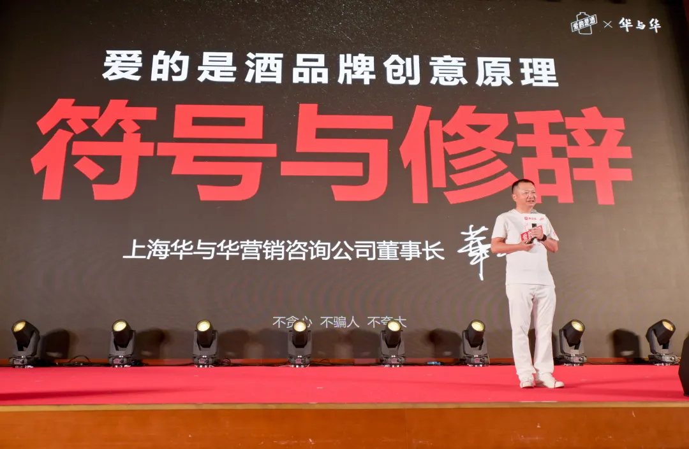
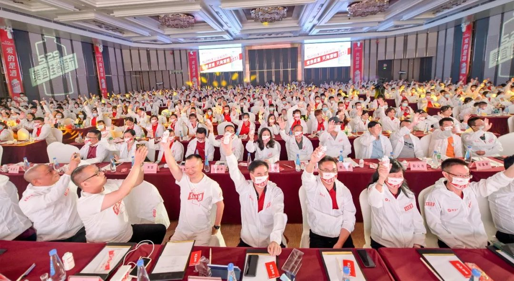
了解华与华的朋友都知道，华与华为企业提供“企业战略+品牌战略+产品开发”三位一体的服务。其中华与华的产品开发，依循“商品企划—产品命名—包装设计—产品研发—上市销售”的路径，“先有商品企划，再有产品研发”， 所有的事都是一件事，所有的事都在华与华一次成型。
“爱的是酒”就是华与华产品开发的标本式案例，本文将结合华杉在“爱的是酒”发布会现场演讲内容，从以下 4 个方面为你讲透“爱的是酒”的产品开发方法及底层逻辑：1 、产品定位：产品开发从购买理由开始；产品开发起手式，华与华定位坐标系。2 、命名/口号：广告的本质是促使人行动的修辞学；产品即命名；品牌谚语要绕开顾客的心理防线，绕开顾客的审美疲劳。3 、符号/包装超级符号就是发送观念的爬虫挖掘潜意识；商品即信息，包装即媒体。4 、 4P 策划相辅相成，不能单独成立。
1产品开发起手式
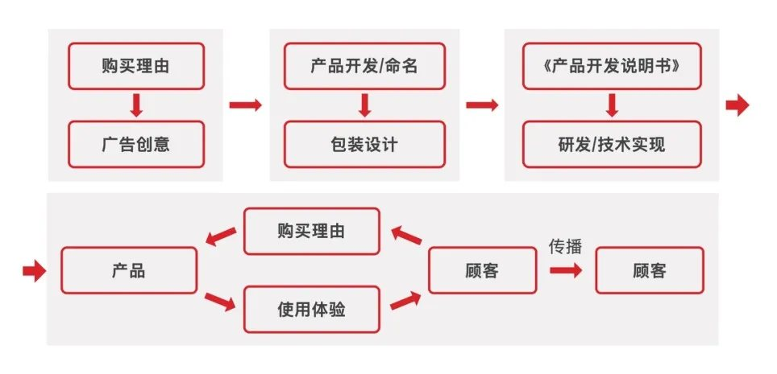
华与华定位坐标系华与华的产品开发，不是从产品开始，而是从临门一脚销售开始，后工序决定前工序。始终服务于最终目的，随时回到原点思考，先确定最终让消费者购买产品的原因是什么，我们就从这儿开始，这也就是华与华说的“购买理由”。但是，一个产品的价值点可以列出非常多，如何确定能够打动购买的购买理由是什么呢？这就要用到华与华产品开发的起手式——产品定位坐标系。定位坐标系分为三个轴，即企业史及全球行业史、消费者、购买理由。对行业、消费者以及产品可提出的价值点三个维度的分析，从而明确产品的定位，而一切营销推广也将基于这个定位展开。
第一条轴：企业史及全球行业史这是我们的企业特性，就是企业史和全球行业史。华与华是做“企业基因工程”的，面对一个企业，我们会找出这个企业的基因，我们相信过去成功的基因就决定了它未来可能的机会。企业跟企业是不一样的，一个行业的企业也是完全不一样的，别人能做的事你不一定能做，你能做的事别人不一定能做。找到自己的基因，然后在全球这个行业的历史里去找全球的行业经验，要把行业里面的经验找出来为我所用。
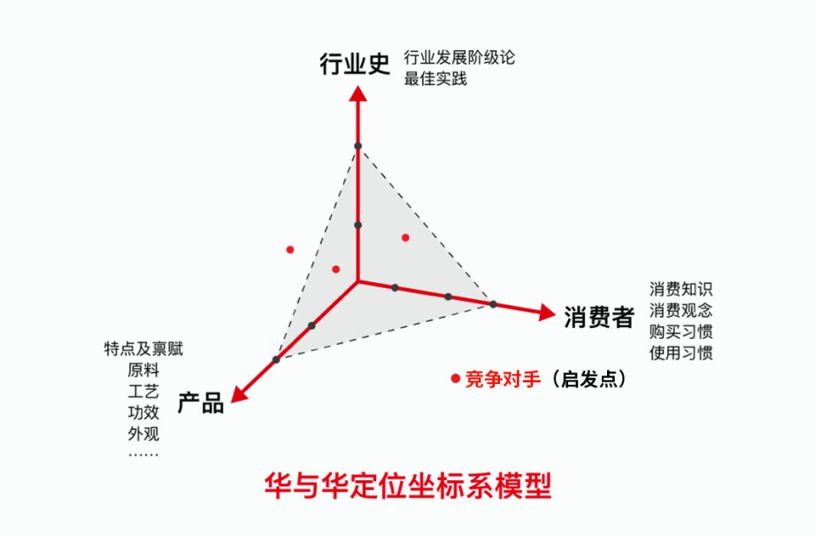
第二条轴：消费者看消费者就是看他的消费知识、消费观念，消费习惯和购买决策，看他对什么敏感！你说的消费者不敏感，你也打动不了消费者。第三条轴：产品产品就是购买理由，我们把所有可供选择的购买理由列出来。通过这三个维度的交叉分析，找到一个购买理由既是行业发展的趋势，又是消费者十分敏感的痛点，那就是这个产品的定位。我们研究发现，一方面当下酱酒大热，“不喝酱酒不懂酒”已成趋势；另一方面，酱酒的生产工艺决定了酱酒的成本要高于其他香型酒，再加上传统的包装、广告、渠道加成，很多人买不起一瓶正儿八经的纯粮酱酒。从企业的资源禀赋看，酣客酱酒在茅台镇控股、独资、持股三大酒厂，创新 FFC 模式（把传统经销商替换成粉丝，由各地的粉丝开设酣客酒窖，直接面向消费者）。酣客酱酒没有大广告和多层渠道的成本，再以互联网行业的基因提高经营效率，最终为酣客粉丝提供一瓶好喝不贵的茅台镇酱香酒，成为白酒行业的绝对黑马。而美宜佳是全国拥有 23000 家门店的便利店品牌，一直追求提供方便快捷、质优价廉的产品和服务，直达亿万顾客。
美宜佳联合酣客酱酒，能够大幅度降低传统白酒经营的环节和成本，有意志也有能力，打造出一款“好又不贵”的茅台镇酱酒。因此，我们对这款酒的产品定位就是“一瓶人人都喝得起的好酱酒”。这款产品的购买理由就是“不为过度包装买单、不为层层渠道付费，尽可能把钱都花在酒上”。
2广告的本质
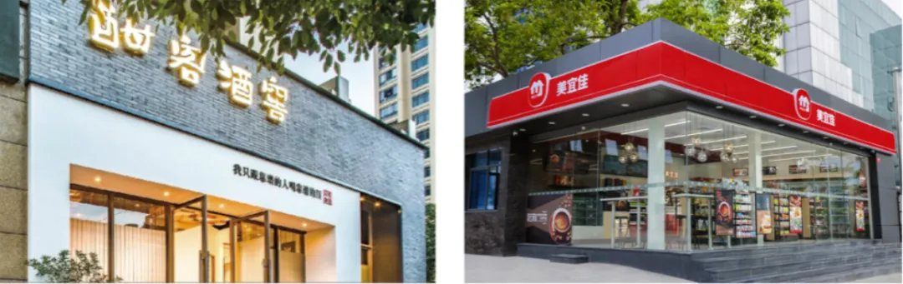
是促使人行动的修辞学华与华一直强调，做任何事情，要有哲学级的洞察和原理级的解决方案，就是要看到最根本的底层逻辑。我们认为命名和口号的底层逻辑，都是修辞学。什么是修辞学？亚里士多德给到它有一个定义：“修辞学是说服人相信任何东西，以及促使他行动的语言艺术。”这不就是在说广告？广告不就是说服人相信任何东西并促使他行动的语言艺术吗？只是，在广告的这个修辞学里面，让人相信实际上还是次要的。如果你想先说服消费者相信，信了之后再行动，那成本就太高了。我们不需要讲那么多让消费者相信，只是让他行动就好了。所以，我们的广告是要做“促使人行动的语言”。那什么样的语言能让人行动呢？亚里士多德讲了四条：普通的道理、简单的字词、有节奏的句式或押韵、使人愉悦。
理解了广告的本质是修辞学，那接下来开始第一步，就是要从产品命名开始。
命名影响行为看到这里，可能很多同学会觉得，我回去就用修辞学的原理去做广告语。但是，这就错了！首要的不是用在广告语，而是用在命名上。我们要通过非中性的命名，影响顾客的行为。这里需要再分别介绍维特根斯坦和哈耶克，这两位哲学家的两段话。
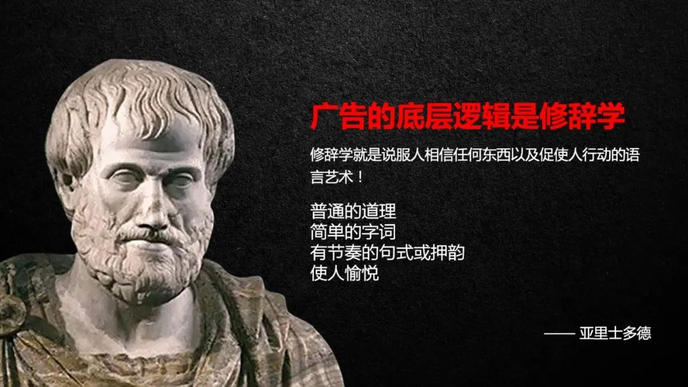
▲奥地利哲学家-维特根斯坦
▲英国知名经济学家、政治哲学家-弗里德里希·哈耶克
维特根斯坦和哈耶克都在强调什么？他们都在强调词语并非是中立的，词语是带有立场和逻辑的，词语能够影响人的行为。而我们做品牌营销，我们要做的就是就要去选择立场鲜明，逻辑强势的词语让对方像我们希望的那样去思考，去行动。就像竞选口号就是词语来影响思考，影响行为的典型代表。竞选人的口号就是“产品名”，选民用选票选择是否买单。
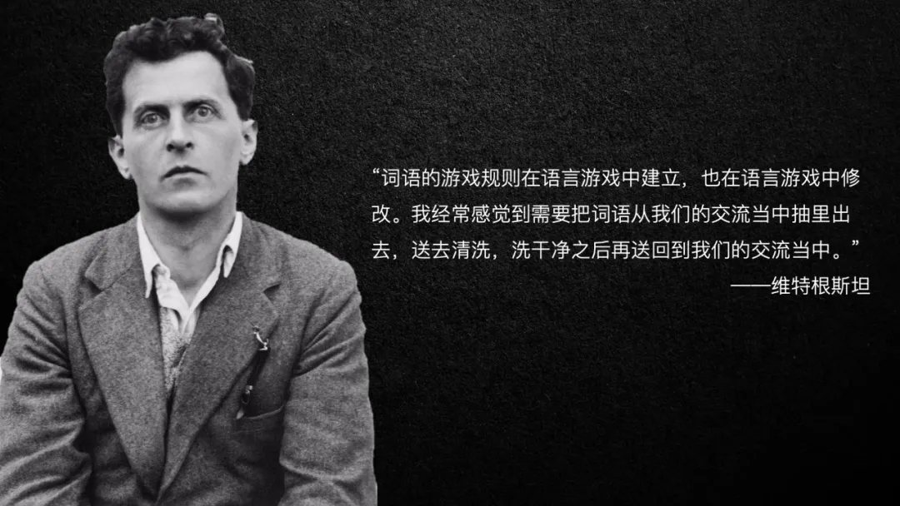
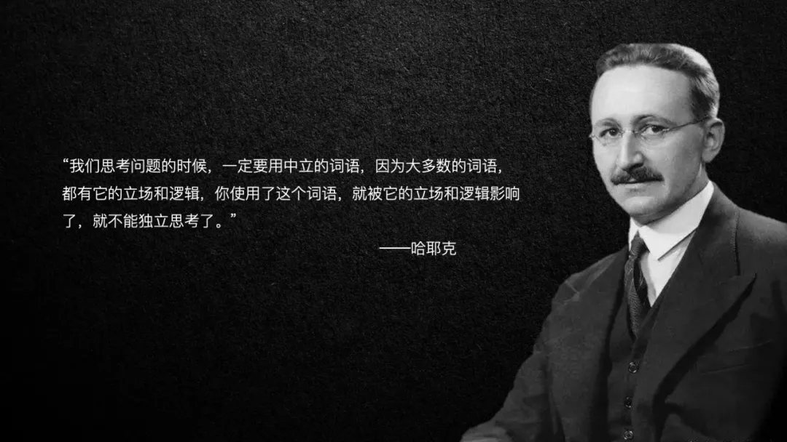
一个竞选口号，就是聚集和领导群众的原点，一个竞选口号，就是领导人民和国家的战 略 。 奥 马 巴 的 “ CHANGE ” 、 特 朗 普 的 “ Make America Great Again ” 、 拜 登 的“ Build Back Better ”都是立场鲜明的命名，以一个绝对正确的观点，在影响选民的思考和行为！
我们希望让顾客如何去思考？我们希望顾客如何行动？这款酒是尽可能把钱都花在酒上，所以，我们希望顾客也是只关注酒本身，希望他们爱的是酒，不是包装和面子。所以，我们创意了一个立场绝对正确、逻辑极其强势、不可反对辩驳的命名“爱的是酒”！谁能说他爱的是包装是面子，不是酒呢？这时候你就在消费者心里埋下了一颗“爱的是酒”的种子，这颗种子将影响顾客的思考，进一步影响顾客的行为。
品牌谚语要使人愉悦当我们在顾客心里埋下“爱的是酒”的种子之后，下一步就是抛出明确的购买理由，就是尽可能让顾客把钱花在酒上，只掏酒钱买好酒。所以，我们的品牌谚语就是——爱的是酒 只掏酒钱！
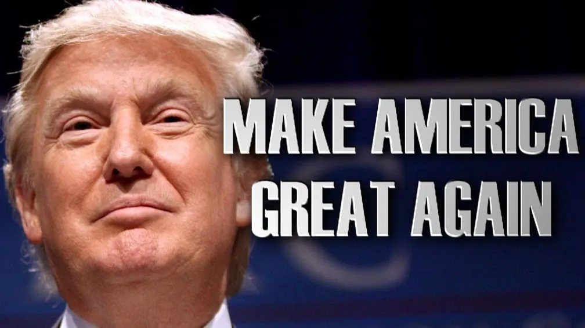
“爱的是酒 只掏酒钱”，也是绕开顾客的心理防线，给顾客埋下了一个观念——我以前更多是把钱花在了包装、广告上，我以前经常在酒水之外的地方花冤枉钱。这句话除了传达购买理由之外，更关键的是也是一种价值主张，这个价值主张为顾客创造了愉悦的使用体验。“爱的是酒，只掏酒钱”，别人拿好几千的酒，虽然我买的是 99 块钱的酒，但是我没有为过度包装花冤枉钱，我没有为名气面子交智商税，我把钱都花在酒上，所以，我买99 块钱的酒，但是我很骄傲。“爱的是酒，只掏酒钱”，体现我的理性，我不喝瓶、不喝名，我就只掏酒钱买好酒！这就展示了顾客自由选择的理性和权利，这是有一种掌控的情绪，让消费者有一种自信和自豪的情绪。你会发现，“爱的是酒”的命名，和“爱的是酒，只掏酒钱”的品牌谚语，背后都是修辞学原理，利用简单的道理和字词，传达出鲜明正义、不容反驳、情绪充沛的立场，绕开了顾客心理防线，让顾客感到愉悦，并进一步影响了行为。
3超级符号就是发送观念的“爬虫”挖掘潜意识什么是品牌？品牌就是产品的牌子，产品要承载品牌传达的价值，就是购买理由和使用体验。因此，我们要通过产品传达出“你买到的是一款好酱酒；你把钱都花在了酒上”，通过产品实现在承诺和体验上的统一。
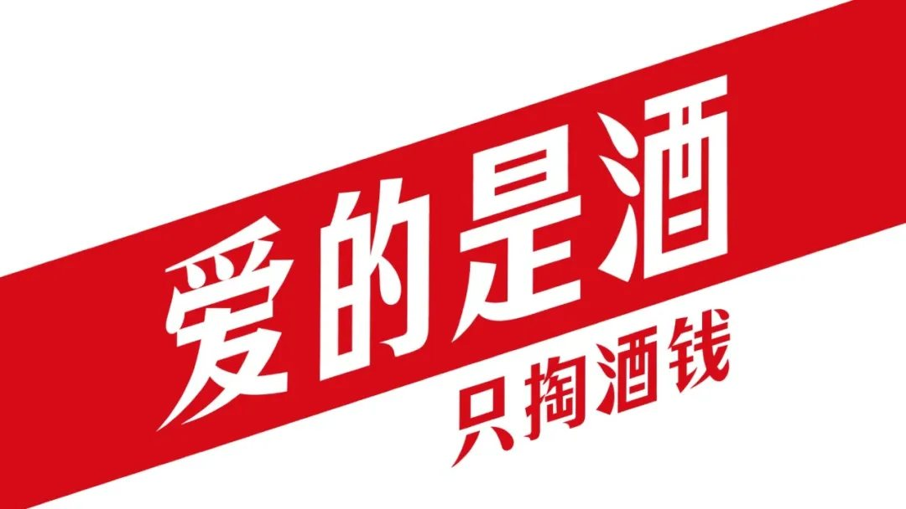
如何通过产品高效的传达这些价值，这就要用到华与华超级符号的方法了。
超级符号就是发出观念“爬虫”提高接收效率我们还是先回到原理层面理解这件事。一切的营销传播，其实都是符号的编码和解码。发送者将想要表达的信息进行编码之后，通过媒介发送出去，接收者接收到信号再进行解码，理解之后进行决策，产生行动。
而在营销中，最难的就是往往我们编码的东西发出去之后，消费者接收不到或者接收之后又解码不了，整个传播过程中，编码、解码效率损耗非常大，效率非常低。华与华超级符号方法，就是寻找最高效率的符号来进行编码，找到大家以前就熟悉的东西来进行改造。我们发送的不是一个完整的编码，而是一个观念的“爬虫”，这个爬虫被消费者接收后，它能够“钻到”顾客的脑袋里面去，抓取他脑海里的集体潜意识，利用他本来就知道的东西，大幅度降低营销传播的成本，提高传播的效率。那么，对于好酱酒的符号是什么？一说酱酒，大部分人能想到的可能就是下图这个瓶形。
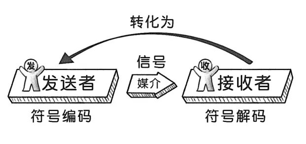
我们在这个基础上不能有太大的“设计”，因为设计就是在提高营销传播的成本。那怎么把这一个人人都认识的符号，又私有化变成我们的符号呢？我们在此基础上，选择了瓶盖作为设计点，因为瓶盖是每一次喝酒都必然接触的高频接触点，通过瓶盖的调整，就实现了私有化的改造。
只掏酒钱的包装形式有了瓶型符号之后，我们进一步找到了一种体现好酒的“符号”，就是白底红字的包装形式。我们都知道烟厂有卖白盒烟的，上面就写四个红字“内部供应”、“内部品鉴”；奔富的红酒 389 、 407 ，都还是比较复杂的，但是到了最高档的葛兰许，就是白底上非常多的红色文字，这就是一种直接且坦诚的设计语言。
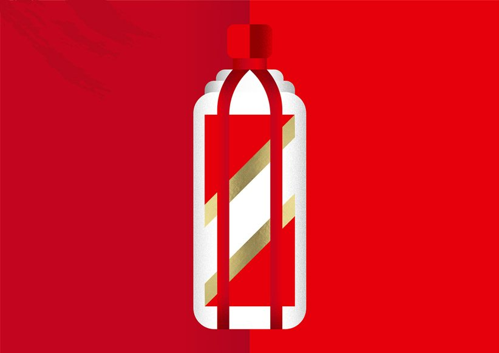
所以，我们的产品没有使用外盒，而且在标签设计上全部是白底红字，单色贯穿瓶身，强调我们买的是酒，而不是把钱花在酒瓶上。
商品即信息，包装即媒体在确定瓶型符号和包装形式之后，下一步就是包装内容的规划。我们强调，要充分利用产品包装，形成一个信息炸弹。基于“爱的是酒 只掏酒钱”的主张，我们在包装上标注售价、包材成本价，在包装上尽可能展示全部指标信息、教顾客辨别纯粮酱酒的方法。机关一：标注价格和包材成本
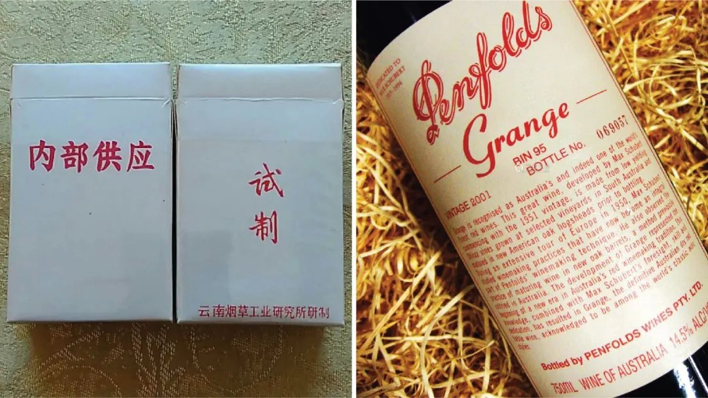
机关二： 1 赔 10000 的承诺
机关三：明明白白标注工艺原料
机关四：教顾客如何辨别好酒，成为顾客可信赖的“权威专家”
“爱的是酒”的酱酒瓶形、独特瓶盖，白色标签上大量红字信息，可以说这是今天中国白酒市场独一无二的包装，这个包装信息量巨大，但又干净利索、简单痛快，让人过目不忘。
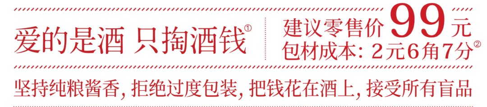
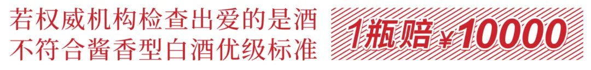
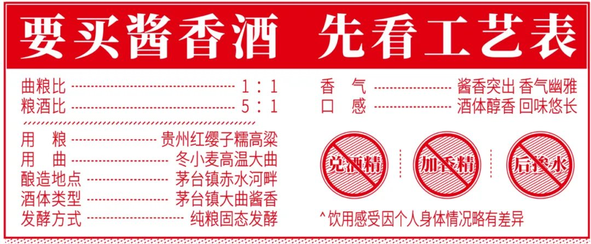
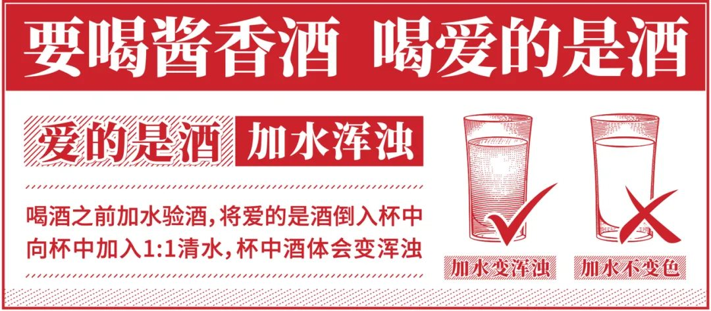
44P相辅相成 不能单独成立在完成独一无二的包装设计之外，最后还有一个问题，就是这个酒是多大规格的？华与华营销就是讲 4P ，除了产品之外，还有价格、渠道和推广，这里非常关键的一点是， 4P 不是独立思考的， 4P 之间是相辅相成，不能单独成立的！产品的规格设定是渠道、价格等多方面共同决定的。
渠道和价格决定产品规格在规格的设定上，就体现了客户的敏锐洞察和创新精神。从销售渠道美宜佳来看，美宜佳作为日常便利的消费渠道，小瓶装的产品销量更大，目前大家普遍追求“少喝点喝好点”，所以，客户提出我们是不是可以做小一些，做一个独一无二的规格？因此，我们现场讨论就确定了两个规格，一个是常规的 100ml ，另一个规格就是315ml 。为什么要做 315ml ？一方面是抓这个文化原力， 315 是消费者权益保护日，另外一点，是为了能够实现 99 元的价钱。为什么要定 99 元的价格？这也是品牌战略的延展，我们的价格也要让顾客知道自己“爱的是酒，只掏酒钱”，少花钱买好酒，所以，当不超过 100 元的时候，这个价格本身也成为一个符号， 100 元以下的好酱酒。
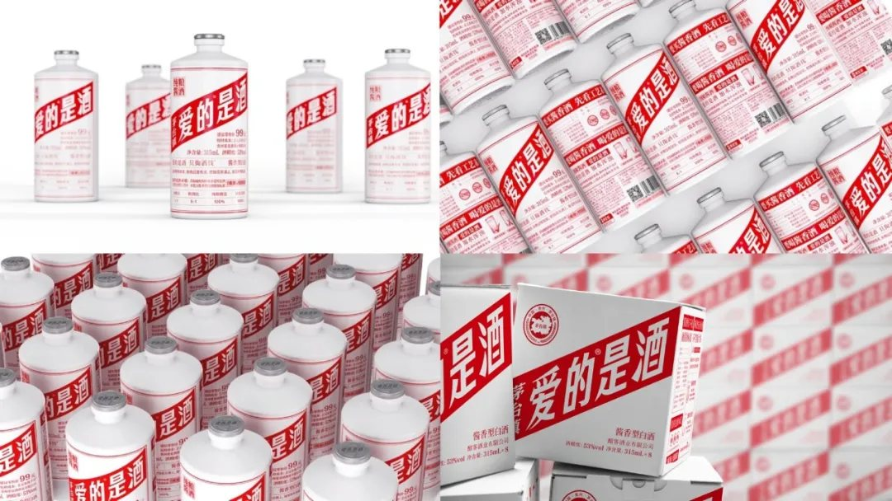
99 元如果放到礼品市场就会是灾难！比如，脑白金要是卖 99 元，就卖不出去，因为它是“送礼就送脑白金”，送礼的人觉得我花了 99 块，买了个“几十块钱“的东西，送不出手。
那如果脑白金定 168 元，卖不卖得出去？也会卖的更少。送礼的人觉得我花 168 ，我就买个 100 多块钱的东西。所以 120 左右是它最好的价钱，因为花 120 ，送出去的是“一百多”的东西。如果你要做到一百元内，你就要做到五六十，就不能做到 99 。产品购买理由决定定价，定价又决定产品规格，同时还要考虑渠道的因素。 4P 是相辅相成的，不能单独策划，因为 4P 本身就不能单独成立。
本文总结以上就是华与华策划“爱的是酒”这款产品，从产品定位、创意命名、口号以及设计产品包装的全部过程，你会发现每一个地方都是机关算尽，最关键的就是“始终服务于最终目的”，后工序决定前工序，而且，所有的事都是一件事，所有的事都要在一个系统里完成。1 、产品开发从购买理由开始。基于人人想喝却喝不起一瓶正儿八经的纯粮酱酒的社会问题，洞察“爱的是酒”产品开发创意。强调这款产品的购买理由就是“不为过度包装买单，不为层层渠道付费，尽可能把钱都花在酒上”。2 、命名和口号的底层逻辑，都是修辞学。
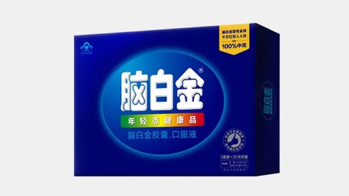
这款酒传达的是我们尽可能把钱都花在酒上，我们希望顾客也只关注酒本身，希望他们爱的是酒，不是包装和面子。所以，我们创意了一个立场绝对正确、逻辑极其强势、不可反对辩驳的命名“爱的是酒”和品牌谚语“爱的是酒 只掏酒钱”。利用简单的道理和字词，传达出鲜明正义、不容反驳、情绪充沛的立场，绕开了顾客心理防线，让顾客感到愉悦，并进一步影响了行为。3 、商品即信息，包装即媒体。基于“爱的是酒 只掏酒钱”的主张，这款产品没有外盒，在标签设计上全部是白底红字，单色贯穿瓶身，强调我们买的是酒，而不是把钱花在酒瓶上。并在包装上标注售价、包材成本价，在包装上尽可能展示全部指标信息、教顾客辨别纯粮酱酒的方法。可以说这是今天中国白酒市场独一无二的包装，这个包装信息量巨大，但又干净利索、简单痛快，让人过目不忘。4 、渠道和价格决定产品规格。基于美宜佳这个销售渠道来看，为了实现 39 元和 99 元的售价，规格明确为 100ml 和315ml 。4P 是相辅相成的，不能单独策划，因为 4P 本身就不能单独成立。目前，爱的是酒已经在全国美宜佳门店上架，欢迎大家前往美宜佳门店购买，爱的是酒，只掏酒钱！扫描下方二维码即可下单，请注意：下单时“自提地点”任选，会由客服联系后包邮到家！
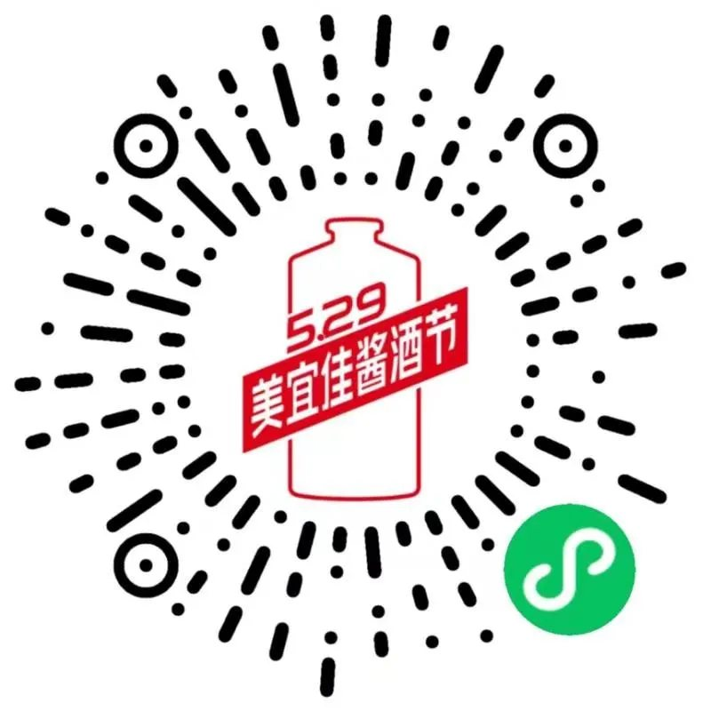
内容整理 | 刘泽国主编 | 冯臻